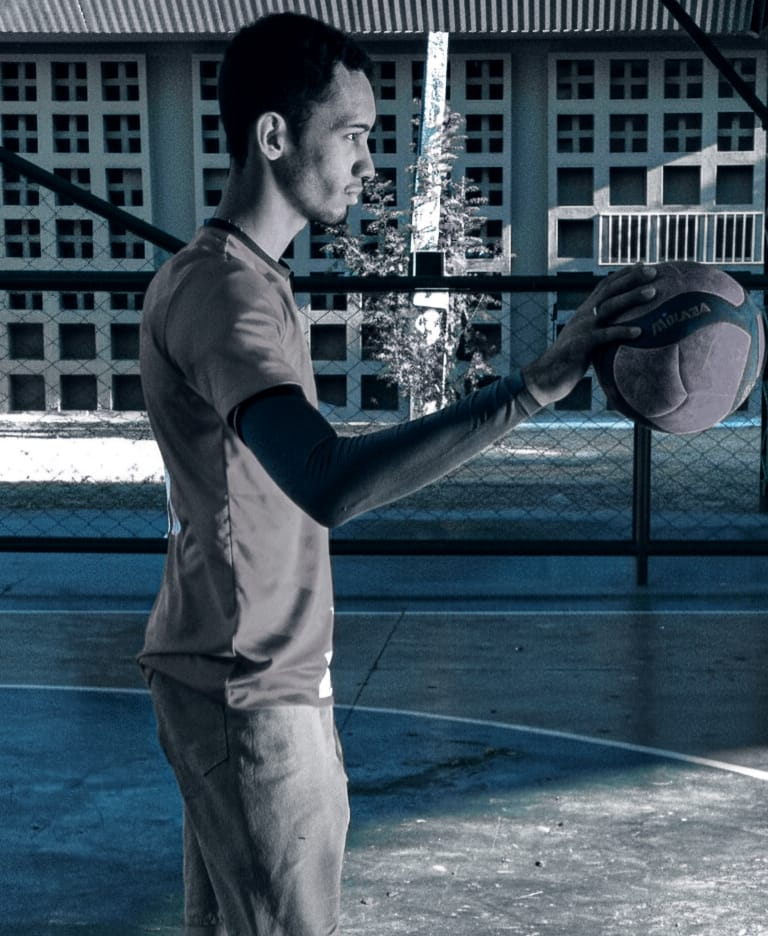

Joia do Crato: Aos 18 anos, é eleito 3º melhor do estado e chega à Seleção Cearense Sub-21

O vôlei cearense tem um novo nome para ficar de olho, e ele vem direto do interior. Com apenas 18 anos, o jovem Jos Mael, natural da cidade do Crato, acaba de ser eleito o 3º melhor jogador de todo o estado do Ceará. A ascensão meteórica do dono da camisa 16 não parou por aí: o destaque nas quadras rendeu ao atleta uma antecipada e merecida convocação para a Seleção Cearense Sub-21.
Competindo contra atletas mais velhos e experientes durante toda a temporada, a frieza e o poder de ataque do jogador chamaram a atenção de grandes equipes do cenário regional.
Quem não escondeu a admiração pelo garoto foi o técnico do Norde Vôlei, o ex-atleta e campeão olímpico com a Seleção Brasileira, Marcelo Negrão. Observando o desempenho de Jos Mael durante os torneios recentes, o treinador rasgou elogios à nova promessa e já deixou no ar um possível interesse futuro da equipe.
Agora, o foco do jovem talento se volta para a Seleção Cearense. Sendo um dos mais novos do elenco Sub-21, Jos Mael já iniciou a preparação com o grupo e promete levar a mesma energia que o consagrou no cenário estadual para os campeonatos nacionais.
O vôlei da região do Cariri, que sempre foi um celeiro de bons atletas, celebra o momento do seu novo representante, provando que a força do esporte no interior cearense segue mais viva do que nunca.